考古題・PYTHON 機器學習實務
2024 期中考
2024 年 10 月 29 日的期中考，共 8 大題、滿分 100%。每一題都附上原始題目（從考卷裁切）、中文題意，以及兩份藏起來的解答：學長姊的手寫參考答案（附批改註記），和 Claude 的詳解（寫給高中生也看得懂，並連到講義裡對應的觀念）。
- 範圍：第 2–4 章
- 題數：8 大題、18 小題
- 配分：每小題 5% 或 10%
- 題目要求：須詳細說明，只寫結論只拿少許分數
- 先自己寫。看題目，在紙上把答案寫出來，至少寫個大概。
- 再對答案。打開「學長姊的參考答案」，看別人在考場上怎麼寫、哪裡被我標了要修正。
- 最後弄懂觀念。打開「Claude 的詳解」，看白話說明，點連結回講義複習；會了就按「我會了」。
分類與迴歸10%（各 5%）・第 2 章
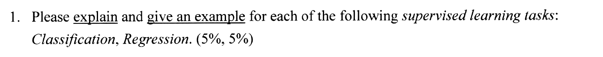
開新分頁放大中文題意：說明下面兩種「監督式學習」任務，並各舉一個例子：分類（Classification）、迴歸（Regression）。
學長姊的參考答案手寫掃描・附批改註記先自己寫寫看
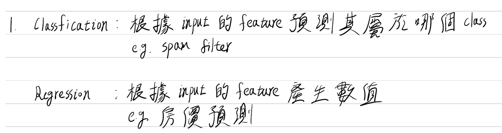
開新分頁放大看文字版
Classification：根據 input 的 feature 預測其屬於哪個 class。e.g. spam filter
Regression：根據 input 的 feature 產生數值。e.g. 房價預測
- 定義和例子都對：分類是「預測屬於哪一類」，迴歸是「預測一個數值」。
- 題目寫「須詳細說明」，可以再補兩句比較保險：① 監督式學習的訓練資料每一筆都附有正確答案（標籤）；② 分類的輸出是有限個、不連續的類別，迴歸的輸出是連續的數值。例子也可以說清楚輸入和輸出各是什麼。
Claude 的詳解白話講解・觀念連結先自己寫寫看
監督式學習：訓練資料的每一筆都有特徵
- Classification（分類）：要預測的
是有限個類別中的一個（離散）。
例：垃圾郵件過濾器。輸入一封信的特徵（出現哪些字、寄件者等），輸出「垃圾信」或「正常信」。又如 MNIST 手寫數字辨識，輸出 0～9 其中一個數字。 - Regression（迴歸）：要預測的
是一個連續的數值。
例：房價預測。輸入一個街區的收入中位數、房屋年齡、人口等特徵，輸出房價中位數（例如 25.3 萬美元）。
分類像選擇題：答案只能從固定的選項裡挑一個，選錯就是錯，「垃圾信」和「正常信」之間沒有「差一點」。
迴歸像計算題：答案是一個數字，真實房價是 25 萬，猜 24 萬比猜 10 萬好得多，所以誤差有「大小」之分（這也是為什麼迴歸用 RMSE 這種「差多少」的指標）。
容易混淆：名字不可信。「邏輯迴歸」名字有「迴歸」，其實是分類模型（輸出是屬於某一類的機率，再用門檻判斷類別）。反過來，同樣是房價，如果只要分「低／中／高」三個價位，就變成分類問題。判斷方法只有一個：看要預測的答案是類別還是連續數值。
訓練、驗證、測試集與交叉驗證15%（各 5%）・第 2 章
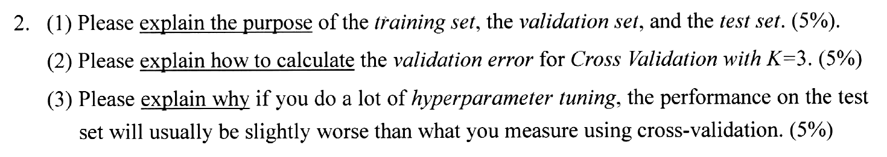
開新分頁放大- 說明訓練集、驗證集、測試集各自的用途。
- 說明 K = 3 的交叉驗證，驗證誤差怎麼算。
- 說明為什麼做了大量超參數調整之後，測試集上的表現通常會比交叉驗證量到的稍差。
學長姊的參考答案手寫掃描・附批改註記先自己寫寫看
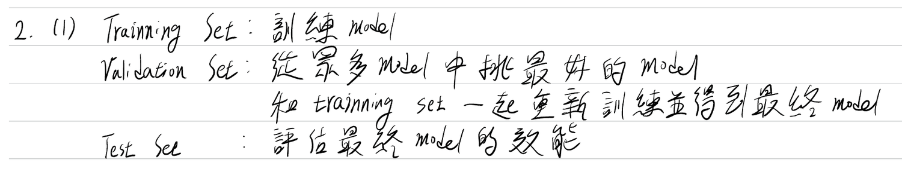
開新分頁放大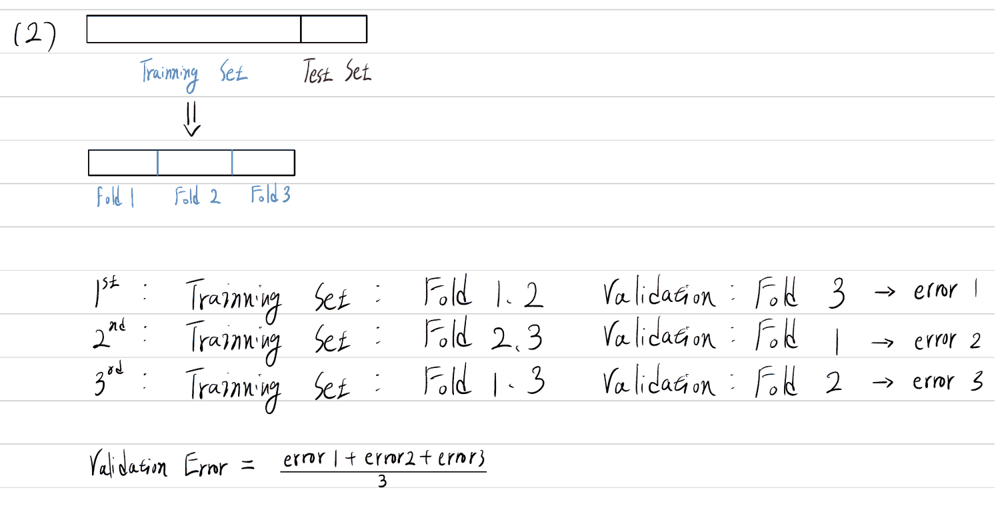
開新分頁放大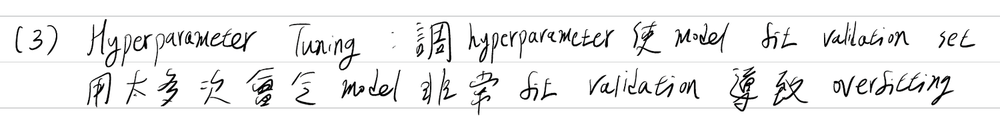
開新分頁放大看文字版
(1) Training Set：訓練 model。Validation Set：從眾多 model 中挑最好的 model，和 training set 一起重新訓練並得到最終 model。Test Set：評估最終 model 的效能。
(2) Training Set 切成 Fold 1、2、3。第 1 次：Fold 1、2 訓練，Fold 3 驗證 → error 1；第 2 次：Fold 2、3 訓練，Fold 1 驗證 → error 2；第 3 次：Fold 1、3 訓練，Fold 2 驗證 → error 3。Validation Error = (error 1 + error 2 + error 3) ÷ 3。
(3) 調 hyperparameter 使 model fit validation set，調太多次會讓 model 非常 fit validation，導致 overfitting。
- (1)正確，還提到「挑好之後和訓練集合併重新訓練」，這是課本的做法，很加分。
- (2)正確，圖畫得很清楚。可以補一句「每個 error 都是在沒有參與那一輪訓練的 fold 上算的，所以每筆資料剛好被驗證一次」。
- (3)方向正確（對驗證資料過擬合）。但題目問的是「為什麼測試集會比較差」，最好把最後一步接上：測試集是調參過程中從沒看過的新資料，對驗證資料的「特別適應」帶不過去，所以分數會稍微掉下來。
Claude 的詳解白話講解・觀念連結先自己寫寫看
(1)三種資料集的用途
- Training set（訓練集）：用來訓練模型，也就是調整模型的參數（例如線性迴歸的權重
）。 - Validation set（驗證集）：用來比較不同的模型和不同的超參數設定，挑出表現最好的那一個（模型選擇）。挑好之後，通常把訓練集和驗證集合起來，重新訓練出最終模型。
- Test set（測試集）：在最後只用一次，估計最終模型對從沒看過的新資料的表現（泛化誤差）。不能拿它來挑模型或調參數，否則估計會太樂觀。
(2)K = 3 交叉驗證的驗證誤差
- 先把測試集放在一邊；把訓練集隨機分成大小差不多的 3 份（fold）：F1、F2、F3。
- 做 3 輪。第
輪拿 Fk 當驗證資料、其他 2 份當訓練資料：訓練一個新模型，算它在 Fk 上的誤差 （例如 RMSE 或錯誤率）。 - 驗證誤差就是 3 個誤差的平均：
（也可以一起報告標準差，看結果穩不穩定）。
只切一塊的話，驗證分數很看「剛好切到哪些資料」的運氣。交叉驗證讓每一筆資料都剛好當過一次驗證資料，3 次的平均比較穩，還能從 3 個分數的差異看出估計有多可靠。代價是要訓練 3 次。
(3)為什麼大量調參後，測試分數通常比較差
調超參數時，我們試了很多組設定，最後挑交叉驗證分數最好的那一組。每組的交叉驗證分數其實＝真實實力＋一點運氣（剛好和這些驗證資料特別合）。試的組合越多，被挑中的那一組越可能是「運氣剛好比較好」的，所以它的交叉驗證分數偏樂觀；換句話說，超參數被調成特別適合驗證資料，等於對驗證資料輕微過擬合。
測試集是整個調參過程都沒用過的新資料，運氣不會跟過去，分數就回到真實水準，所以通常比交叉驗證量到的稍差。這時不應該再回頭調超參數讓測試分數變好，那些改進不會推廣到新資料。
全班 40 人每人丟 10 次硬幣，丟出最多正面的「冠軍」可能丟出 9 次。但請冠軍再丟 10 次，平均還是只有 5 次。冠軍的 9 次大部分是運氣，不是實力。調參也一樣：從 100 組設定挑出分數最好的那組，它的分數裡混了不少「運氣」，換一批新資料（測試集）就現出原形了。
講義第 2 章第 6 篇有完整的推導和模擬：試了
特徵縮放的兩個公式10%（各 5%）・第 2 章
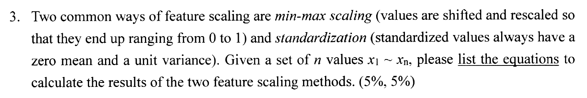
開新分頁放大中文題意：兩種常見的特徵縮放是 min-max 縮放（平移再縮放，讓數值落在 0 到 1）和標準化（結果的平均為 0、變異數為 1）。給
學長姊的參考答案手寫掃描・附批改註記先自己寫寫看
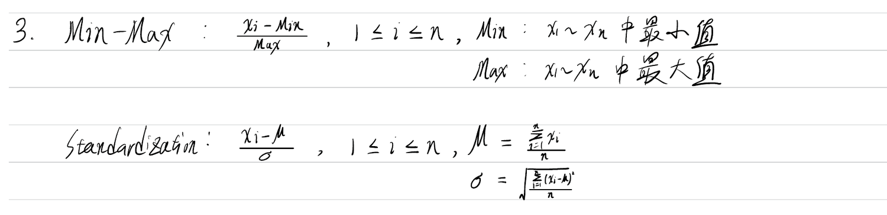
開新分頁放大看文字版
Min-Max：
Standardization：
- Min-max 寫錯了分母應該是 Max − Min（全距），不是 Max。用
檢查：照手寫的公式，最大值變成 ，不是 1；正確公式是 。 - Standardization完全正確。標準差除以
（母體標準差），算出來的變異數剛好是 1，和題目的敘述一致。
Claude 的詳解白話講解・小計算機・觀念連結先自己寫寫看
Min-max scaling：令
最小值變成 0、最大值變成 1，其他按比例落在中間。
Standardization：先算平均
結果
兩種方法都只是「先平移、再縮放」，資料的形狀不變，只是換一把尺來量。
Min-max 像把成績換成「在全班從最低分到最高分之間的位置」：最低分是 0%、最高分是 100%，考 60 分但全班落在 40～80 分，你就在 50% 的位置。
標準化 像說「你比全班平均高幾個標準差」：
平均：
變異數：
注意這裡的 StandardScaler 也是除以
常見失分：① min-max 的分母忘了減
混淆矩陣、Precision／Recall 與取捨20%（各 5%）・第 3 章
![4. The confusion matrix for binary classification is defined as in the following illustration, in which some performance metrics are also defined. Rows are Actual (Negative, Positive), columns are Predicted (Negative, Positive): True Negative (TN), False Positive (FP) / False Negative (FN), True Positive (TP). Accuracy = (TN+TP)/(TN+FN+TP+FP), Precision = TP/(FP+TP), Recall = TP/(FN+TP). (1) A binary classifier has the confusion matrix [53,057 1,522; 1,325 4,096] as the result, please depict the confusion matrix of a perfect classifier for the task. (5%) (2) Please depict the confusion matrix for a dumb classifier which classifies every instance in the negative class for the task. (5%) (3) Please explain why Accuracy is not a good measure for comparing the classifiers in (1) and (2), and Precision/Recall are better for performance comparison. (5%) (4) Please refer to the following illustration and explain Precision/Recall Trade-off (i.e. increasing precision reduces recall, and vice versa). (5%) The illustration shows 12 digits sorted by score with three thresholds: Precision 6/8 = 75%, Recall 6/6 = 100%; Precision 4/5 = 80%, Recall 4/6 = 67%; Precision 3/3 = 100%, Recall 3/6 = 50%.](img/2024-mid/q4.png) 開新分頁放大
開新分頁放大
- 某個二元分類器的混淆矩陣如右上，請畫出這個任務上「完美分類器」的混淆矩陣。
- 請畫出「把每一筆都分成負類」的笨分類器的混淆矩陣。
- 說明為什麼準確率（Accuracy）不適合拿來比較 (1) 和 (2) 的分類器，而 Precision／Recall 比較適合。
- 參考下圖，說明 Precision／Recall 的取捨：提高 precision 會降低 recall，反之亦然。
學長姊的參考答案手寫掃描・附批改註記先自己寫寫看
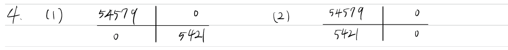
開新分頁放大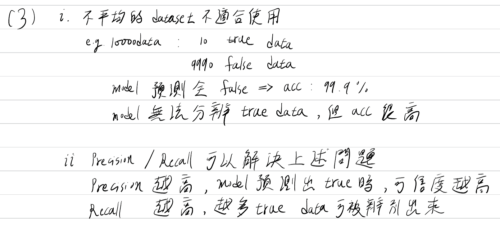
開新分頁放大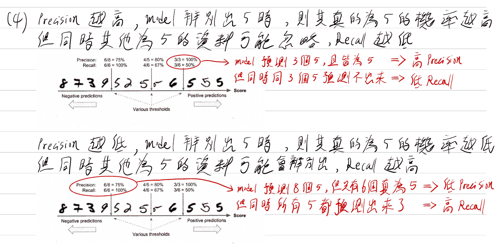
開新分頁放大看文字版
(1) 完美分類器：
(3) i. 不平均的 dataset 不適合使用（accuracy）。例：10000 筆資料，10 筆 true、9990 筆 false，model 全部預測 false，acc 99.9%：model 無法分辨 true data，但 acc 很高。ii. Precision／Recall 可以解決上述問題：Precision 越高，model 預測出 true 時可信度越高；Recall 越高，越多 true data 可被辨別出來。
(4) Precision 越高，model 判斷是 5 時真的是 5 的機率越高，但其他是 5 的資料可能被忽略，Recall 越低（3/3 = 100%、3/6 = 50%：預測 3 個 5 且都是 5 → 高 Precision；但有 3 個 5 沒預測出來 → 低 Recall）。Precision 越低，判斷是 5 時真的是 5 的機率越低，但其他是 5 的資料可能被辨別出來，Recall 越高（6/8 = 75%、6/6 = 100%：預測 8 個 5，只有 6 個真的是 5 → 低 Precision；但所有 5 都找出來了 → 高 Recall）。
- (1)(2)完全正確：真實的負類有 53,057 + 1,522 = 54,579 筆、正類有 1,325 + 4,096 = 5,421 筆，這兩個「列的總和」不會因為換分類器而改變。
- (3)觀念正確、例子也好。更有說服力的寫法是直接用本題的數字：笨分類器的 accuracy 有 90.97%，和 (1) 的 95.26% 只差 4 個百分點，但它的 recall 是 0%（一個 5 都沒找到），precision 甚至算不出來（0/0）。
- (4)正確，還對照圖上的數字說明。可以補上關鍵字「決策門檻（threshold）」：取捨的原因是我們在移動同一條門檻，門檻往右移 precision 通常上升、recall 一定不會上升。
Claude 的詳解白話講解・門檻實驗・觀念連結先自己寫寫看
先讀懂題目給的矩陣（這正是課本 MNIST「5 偵測器」的結果，總共 60,000 張圖）：
| 預測：非 5 | 預測：5 | |
|---|---|---|
| 真的非 5 | 53,057TN | 1,522FP |
| 真的是 5 | 1,325FN | 4,096TP |
關鍵：每一列是「真實答案」。第一列加起來 53,057 + 1,522 = 54,579 張真的不是 5，第二列 1,325 + 4,096 = 5,421 張真的是 5。換分類器只會改變「同一列裡怎麼分到兩格」，列的總和永遠不變。
(1)完美分類器
完美分類器每一張都猜對：所有真的非 5 都被判成非 5，所有真的 5 都被判成 5，FP = FN = 0，數字全部在對角線上：
| 預測：負 | 預測：正 | |
|---|---|---|
| 實際：負 | 54,579TN | 0FP |
| 實際：正 | 0FN | 5,421TP |
(2)永遠猜負類的笨分類器
它把每一筆都判成負類，所以「預測：正」那一行全是 0；真的負類全猜對（TN），真的正類全猜錯（FN）：
| 預測：負 | 預測：正 | |
|---|---|---|
| 實際：負 | 54,579TN | 0FP |
| 實際：正 | 5,421FN | 0TP |
(3)為什麼 Accuracy 不適合，Precision／Recall 比較好
| 分類器 | Accuracy | Precision | Recall |
|---|---|---|---|
| (1) 題目的分類器 | 95.26% | 72.9% | 75.6% |
| (2) 永遠猜負類 | 90.97% | 0/0（無法計算） | 0% |
| 完美分類器 | 100% | 100% | 100% |
算法：(1) Accuracy = (53,057 + 4,096) ÷ 60,000；Precision = 4,096 ÷ (1,522 + 4,096)；Recall = 4,096 ÷ (1,325 + 4,096)。(2) Accuracy = 54,579 ÷ 60,000。
這份資料是不平衡（skewed）的：正類只佔 5,421 ÷ 60,000 ≈ 9%。Accuracy 把所有猜對的都算進來，而負類佔了 91%，所以它幾乎被「負類猜得對不對」決定。結果是一個什麼都沒學、一個正類都找不到的笨分類器，accuracy 也有 90.97%，和 (1) 的 95.26% 看起來差不多，accuracy 分不出誰真的有用。
Precision 和 Recall 都只看正類（我們真正關心的那一類），分子都是 TP：
- Precision = TP ÷ (FP + TP)：模型說「是正類」的裡面，有幾成是真的。
- Recall = TP ÷ (FN + TP)：所有真正的正類裡，模型找到幾成。
用它們比較就很清楚：(1) 的 recall 75.6%、precision 72.9%；笨分類器的 recall 是 0%、precision 無法計算（TP = FP = 0）。所以 Precision／Recall 比較能反映分類器在正類上的真正表現。
機場安檢：一萬個旅客裡只有 1 個帶違禁品。一個安檢員閉著眼睛全部放行，「判斷正確率」也有 99.99%，但他完全沒用。我們該問的是：Recall「帶違禁品的人裡，你攔下了幾成？」以及 Precision「你攔下來的人裡，有幾成真的有帶？」
(4)Precision／Recall 的取捨
分類器其實是先替每一筆資料算一個分數，再和一條門檻（threshold）比較：分數高於門檻判成正類（5），低於門檻判成負類。圖中 12 張圖照分數由低到高排好，三條直線是三個不同的門檻。
- 門檻往右移（變嚴格）：被判成 5 的只剩分數最高、模型最有把握的幾張，誤認的情況變少，所以 precision 上升（6/8 = 75% → 4/5 = 80% → 3/3 = 100%）。但有些真的 5 分數不夠高，被擋在門檻左邊沒抓到，所以 recall 下降（6/6 = 100% → 4/6 = 67% → 3/6 = 50%）。
- 門檻往左移（變寬鬆）：判成 5 的變多，真的 5 幾乎都被抓到，recall 上升；但也混進更多不是 5 的圖，precision 下降。
原因：recall 的分母（真正的 5 共 6 張）固定不變，門檻越高 TP 只會變少或不變，所以 recall 一定不會上升；precision 的分母（判成 5 的張數）也跟著變小，混進來的錯誤通常減少得更快，所以 precision 通常上升。同一個模型只能靠移動門檻在兩者之間選擇，無法同時提高，這就是 Precision／Recall trade-off。
就像老師抓作弊：標準訂得很嚴，「證據確鑿才記過」，被記過的幾乎都真的有作弊（precision 高），但很多作弊的人沒被抓到（recall 低）。標準放寬，「有點可疑就記過」，作弊的幾乎都抓到了（recall 高），但會冤枉不少人（precision 低）。要選哪一邊，看哪一種錯誤代價比較大。
講義第 3 章第 3 篇用真的 MNIST 圖和真的分數做了同一個實驗，還說明了為什麼門檻變高時 precision「偶爾」會下降。
批次梯度下降與 Ridge 迴歸10%（各 5%）・第 4 章
![5. Considering Linear Regression with 3-D input feature (x1, x2, x3) as follows: x(i): the i-th instance, x(i) = (x0(i), x1(i), x2(i), x3(i)), x0(i) = 1 for the bias term. y(i): the label of x(i). h_θ(x(i)): the hypothesis function = θ · x(i) = θᵀx(i), θ = (θ0, θ1, θ2, θ3). Cost Function: Mean Squared Error (MSE) = 1/(2m) Σ_{i=1}^{m} (h_θ(x(i)) − y(i))² (m is the total # of instances for training). (1) Please list the weight update step(s) in Batch Gradient Decent. (5%) (2) Please revise the steps in (1) if Ridge Regression is adopted for regularization. (5%) Ref. Ridge Regression Cost Function = MSE(θ) + α (1/2) Σ_{i=1}^{n} θi², (n = 3 in our case)](img/2024-mid/q5.png) 開新分頁放大
開新分頁放大
- 寫出批次梯度下降（Batch Gradient Descent）更新權重的步驟。
- 如果改用 Ridge 迴歸（成本函數多加
），步驟要怎麼改？
學長姊的參考答案手寫掃描・附批改註記先自己寫寫看
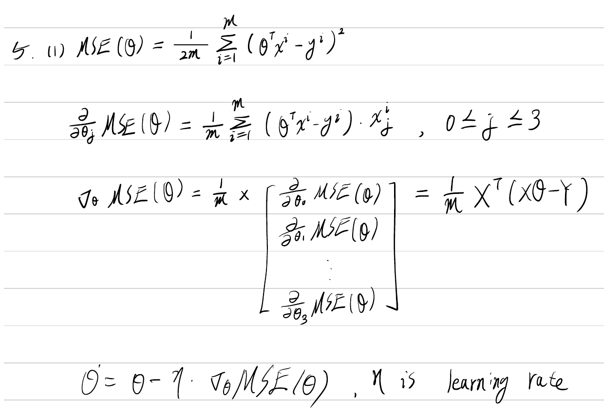
開新分頁放大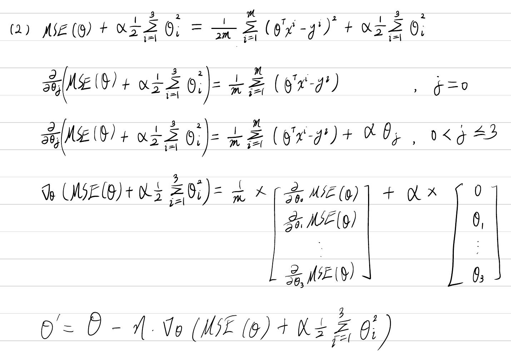
開新分頁放大看文字版
(1)
(2)
- (1)核心都對：偏微分、矩陣形式
、更新式。也注意到 的 2 會和平方微分下來的 2 約掉。 - (1) 小錯梯度向量寫成「
」：每個偏微分本身已經有 ，前面再乘 就多除了一次 。直接寫 就好。 - (1) 補充題目問「步驟」，建議寫出：初始化 θ → 用全部資料算梯度 → 所有
同時更新 → 重複直到收斂。 - (2)知道
不加懲罰、其他參數多一項 ，這是本小題的重點，正確。 - (2) 漏了因子
的偏微分少乘了 ，應該是 。只有 因為 才能省略。向量那一行同樣多乘了 。
Claude 的詳解白話講解・推導・觀念連結先自己寫寫看
梯度下降像蒙著眼睛下山：看不到山谷在哪，只能用腳感覺「哪個方向最陡往下」，往那邊跨一小步，再重新感覺、再跨一步，直到腳下變平。這裡的「山」是成本函數 MSE，「位置」是參數
(1)批次梯度下降的步驟
記第
- 初始化把
設成隨機值（或 0），選定學習率 。 - 用全部
筆資料算梯度 寫成矩陣：（ 的第 列是 ）。 - 四個參數同時更新
也就是
。 - 重複第 2、3 步直到收斂：梯度的長度小於一個很小的容忍度
，或達到最大步數。
因為
白話：第
(2)改成 Ridge 迴歸
成本函數多了懲罰項：
只有第 2 步的梯度要改，其他步驟不變：
矩陣形式：
最後那條式子說：每走一步之前，先把權重乘上一個比 1 小一點的數
常見失分：① 把
多項式特徵的假設函數10%・第 4 章
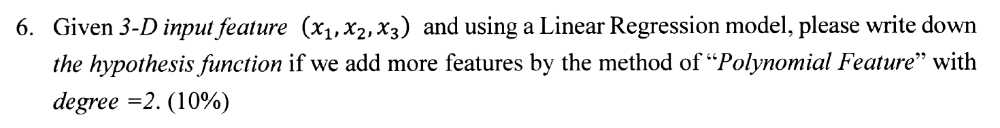
開新分頁放大中文題意：有 3 個特徵
學長姊的參考答案手寫掃描・附批改註記先自己寫寫看
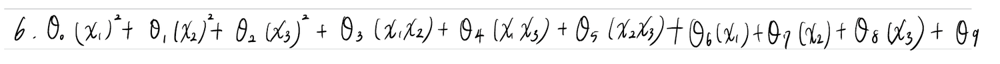
開新分頁放大看文字版
- 正確！10 項都有，包括最容易漏掉的 3 個交叉項
。 - 小建議：習慣上把偏差項寫成
放最前面（和第 5 題的 對應），並寫出「 」。題目要的是假設函數，寫完整比較好。
Claude 的詳解白話講解・乘法表圖解・觀念連結先自己寫寫看
degree = 2 的多項式特徵會加入所有「次數不超過 2」的組合：原本的 3 個一次項、3 個平方項，以及 3 個兩兩相乘的交叉項。線性迴歸再替每一項配一個權重：
共 9 個特徵，加上偏差項
怎麼保證一項都沒漏？把
二次項 = 對角線 3 個 + 右上 3 個 = 6 個；再加一次項 3 個、常數項 1 個，總共
「線性」指的是對參數
常見失分：只寫平方項、漏掉交叉項（變成 7 項）；或把
Lasso 為什麼會把權重歸零10%・第 4 章
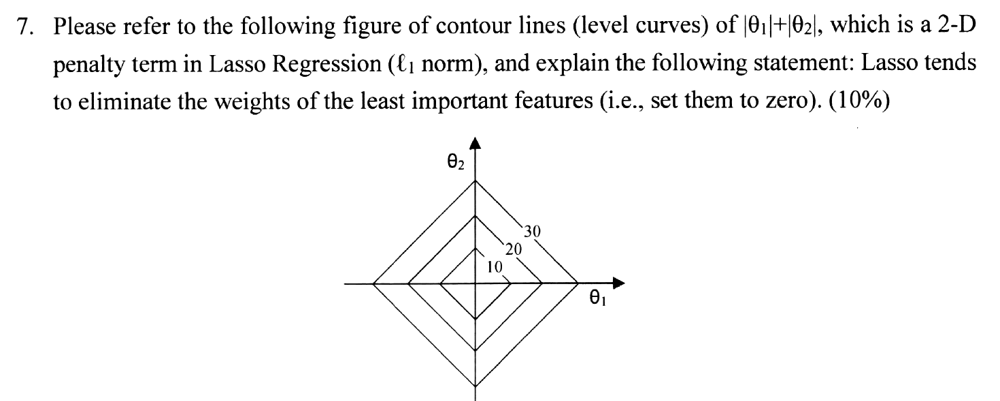
開新分頁放大中文題意：下圖是
學長姊的參考答案手寫掃描・附批改註記先自己寫寫看
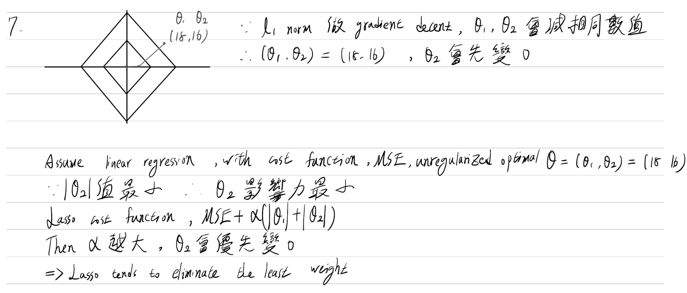
開新分頁放大看文字版
∵ ℓ1 norm 做 gradient descent，θ1、θ2 會減相同數值，∴ (θ1, θ2) = (18, 16)，θ2 會先變 0。
假設線性迴歸、成本函數為 MSE，沒有正則化時的最佳解 θ = (θ1, θ2) = (18, 16)。∵ |θ2| 值最小 ∴ θ2 影響力最小。Lasso 成本函數：MSE + α(|θ1| + |θ2|)。α 越大，θ2 會優先變 0 ⇒ Lasso tends to eliminate the least weight。
- 用梯度解釋，抓到了重點：
的斜率大小永遠是 1，所以懲罰項每一步讓 減少一樣多，比較小的 會先到 0。這是正確的觀點（嚴格說是「次梯度」，因為 在 0 不可微）。 - 題目特別要你「參考等高線圖」，可以再補幾何解釋：MSE 的等高線（橢圓）往外擴張時，最先碰到菱形的地方通常是菱形的尖角，而尖角都在座標軸上，所以最佳解會有一個座標剛好是 0。
- 「
比較小 → 影響力比較小」要成立，前提是特徵已經縮放到相同尺度，否則權重大小不能直接比較。
Claude 的詳解白話講解・幾何實驗・觀念連結先自己寫寫看
Lasso 的成本函數是
① 從等高線圖看（幾何）。最小化
② 從梯度看。
因此 Lasso 會把最不重要的特徵權重設成 0，等於自動做特徵選擇，得到只有少數權重不為 0 的稀疏模型（前提：特徵已經縮放到相同尺度）。
黃點是沒有正則化時的最佳解，可以在圖上點擊或拖動它；紅點是加上限制後的解。切到 ℓ₂ 比較看看，紅點幾乎不會剛好落在軸上。
把權重想成要花錢買的東西。ℓ1 的價格是「每一單位權重 1 元」，第一點點和最後一點點一樣貴。既然價格一樣，最划算的花法是把預算集中在最有用的特徵上，沒什麼用的特徵就一毛都不給（權重 = 0）。
ℓ2 的價格是「權重的平方」，買 0.1 單位只要 0.01 元，一開始幾乎免費。所以每個特徵都值得分到一點點，結果是大家的權重都變小，但很少有人剛好拿到 0。
答題重點：題目要你「參考圖」，所以一定要提到菱形的尖角在座標軸上，以及「MSE 等高線最先碰到尖角 → 某個權重為 0」。再補一句梯度（推力大小固定）的解釋就很完整。
Softmax 迴歸15%（各 5%）・第 4 章
 開新分頁放大
開新分頁放大
- 為什麼 softmax 函數可以拿來估計機率？
- 說明 softmax 迴歸的推論（預測）流程。
- 這個 softmax 迴歸模型有幾個參數？
學長姊的參考答案手寫掃描・附批改註記先自己寫寫看
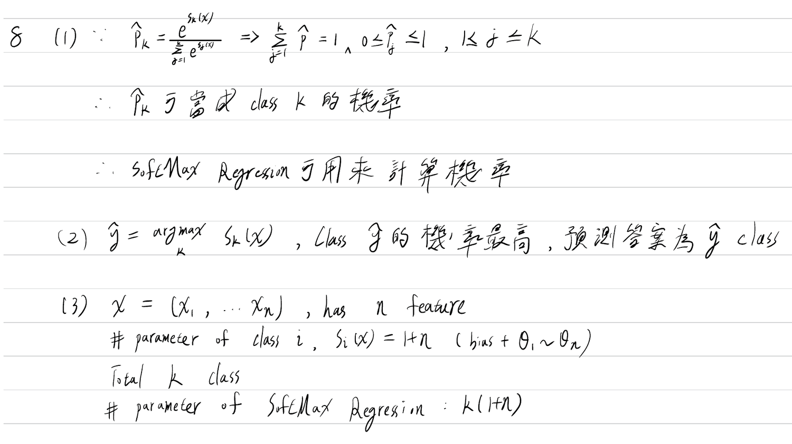
開新分頁放大看文字版
(1) ∵
(2)
(3)
- (1)正確：機率的兩個條件（每個介於 0 和 1、全部加起來是 1）都有寫到。可以再補一句為什麼會成立：
永遠是正數，分母就是所有分子的總和。 - (2)正確，而且直接比分數
是對的（指數函數是遞增的，分數最高的機率也最高）。題目說「說明流程」，把「算分數 → softmax → 取最大」三步寫出來會更完整。 - (3)正確：
。
Claude 的詳解白話講解・softmax 實驗・觀念連結先自己寫寫看
(1)為什麼可以當機率
一組數要能當作「
- 都是正的：不管分數
是正是負， ，所以 。 - 加起來是 1：
。因為每個都是正的、總和是 1，所以每個也一定小於 1。 - 保持大小順序：
是遞增函數，分數越高的類別機率越高，符合「分數代表有多像這一類」的意思。
所以
把 softmax 想成開票：先把每個類別的分數換成「票數」
(2)推論（預測）流程
- 算分數給一筆新資料
（含 ），對每個類別 用它自己的參數算 。 - 轉成機率用 softmax 把
個分數變成 。 - 選最大的預測機率最高的類別：
第 3 步的兩個 argmax 相等，是因為所有
例如上面實驗的預設值：分數
(3)參數個數
設每筆資料有
通常排成一個
如果把同一個向量加到每一個
考題取自 2024 年 10 月 29 日「Python 機器學習實務」期中考；「學長姊的參考答案」為修課學長姊的手寫作答，批改註記與「Claude 的詳解」由 Claude 撰寫，僅供學習參考，不代表授課老師的標準答案。若發現錯誤，歡迎回報。本站內容以 CC BY-NC 4.0 授權；本站以 GoatCounter 匿名統計瀏覽次數，不使用 cookie。